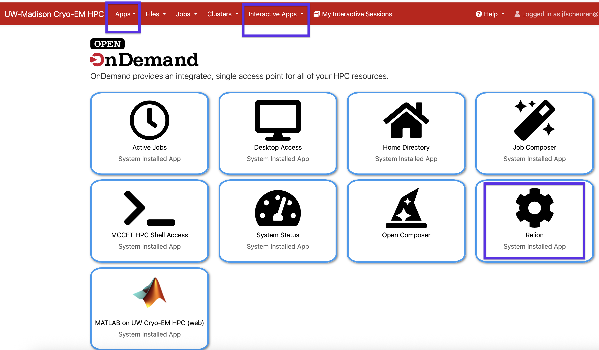
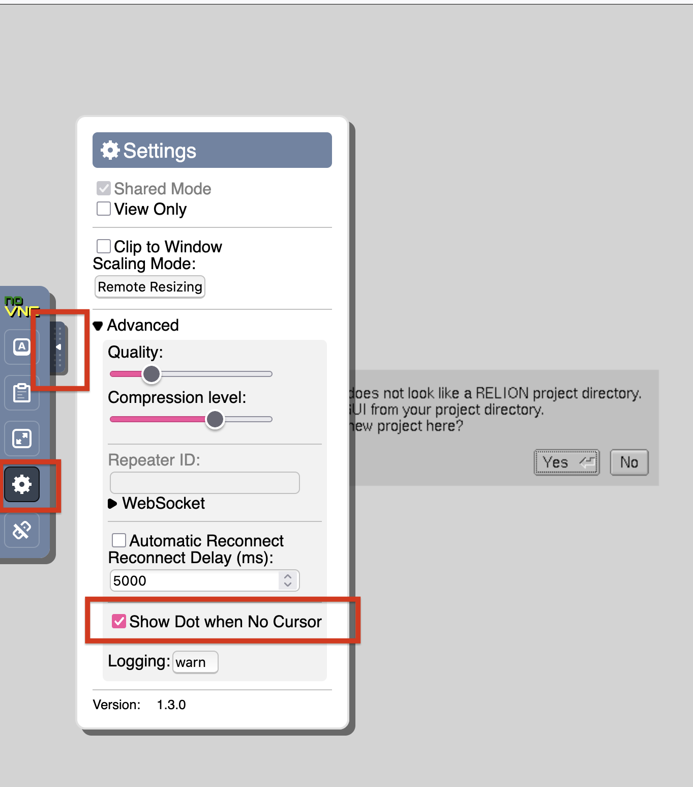
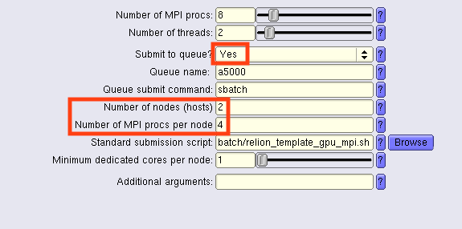

RELION
Relion is an applicataion for processing cryo-EM data. You can read more about Relion on the Relion website.
Please note: The current version of Relion running on the cluster is provided as part of the SBGrid software package. You need your own SBGrid license to use any of the SBGrid applications. More information about SBGrid can be found here
There are three options for using Relion on the HPC cluster.
The Relion web app via Open OnDemand
Relion over interactive desktop via Open OnDemand.
Relion via SSH over X11. (Only for users who are authorized to SSH into the cluster)
The Relion web app:
The Relion web app provides a way to use the Relion gui in your browser. To access the Relion web app either select the Relion button on the Open OnDemand dashboard or select it from the Apps or Interactive Apps menus.
{kind=link}
When you open the Relion application you will need to choose the location of your Relion project. If you are starting a new project you will be presented with a dialog asking if you would like to start a new Relion project. If you do not see a mouse cursor to click yes follow the steps below:
Expand the side bar on the left side of the page.
Click the gear icon to access settings.
Check the box for show dot if no cursor.
You should now see a small dot as a cursor that you can use to click the Yes button.
{kind=link}
Interactive Desktop instructions:
SSH instructions (authorized users):
Start RELION and submit a job to the cluster:
SSH into the login node, including -YC argument for compessed X11 forwarding : ssh -YC user@cryoemcluster.biochem.wisc.edu Navigate to your RELION project directory: cd /mnt/hpc_users/user/relionproject Launch RELION with the following command: relion & Fill in the parameters for the relion job you want to run On the Run tab, if the option Submit to queue is editable, change Submit to queue to Yes. Defaults such as the “Queue submit command” and “Queue name” should already be provided.:18 Defaults such as the number of nodes (hosts) should be 1, and can be changed to allow you to assign additional cluster servers to running your RELION job. Within the ‘a5000’ queue this could include as many as 8 servers with a total of 32 GPUs!
- The “Standard submission script” for GPU jobs should already be pre-filled, but can be changed to a CPU version.
Enter values for the “Number of MPI procs”, “Number of Threads” , and then you can also choose to include more “Number of nodes (hosts)” and “Number of MPI procs per node”. If you want to run many MPI on servers choose a larger number of MPI than MPI procs per node, so that these become split between the requested node by the “Number of MPI procs per node”.
- Example for Running tab, to submit a GPU accelerated job into the queue:
- 
- RELION with MPI on multiple nodes
GPU jobs should use /mnt/hpc_users/share/sbatch/relion_template_gpu_mpi.sh CPU jobs should use /mnt/hpc_users/share/sbatch/relion_template_cpu_mpi.sh
{kind=link}
Job types for HPC submissions |
Suggested MPI and Threads |
Queue |
|---|---|---|
Motion correction (RELION’s own) |
20-60 MPI, 1 thread |
cpu |
CTF estimation |
20-60 MPI, 1 thread |
cpu |
Auto-picking |
Training of topaz is not parallelised and should always be performed with a single MPI process (Use 1 MPI per CPU core, 1 thread per MPI). Picking with topaz has been parallelised and can be run using multiple MPI processes. For picking you can apply as many as 4x MPI per server node each getting 1 GPU assigned and you can run across multiple compute nodes. |
a5000 or a100 |
Particle extraction |
||
2D classification |
5 MPI, 12 threads, GPU enabled |
a5000 |
3D initial model |
5 MPI, 12 threads, GPU enabled |
a5000 |
3D classification |
5 MPI, 12 threads, GPU enabled |
a5000 |
3D auto-refine |
5 MPI, 12 threads, GPU enabled |
a5000 |
3D multi-body |
5 MPI, 12 threads, GPU enabled |
a5000 |
CTF refinesment |
Cpu-only, multiple threads per MPI and all available cpu cores |
cpu |
Bayesian polishing |
Cpu-only, multiple threads per MPI and all avaialble cpu cores |
cpu |
Mask creation |
||
Join star files |
||
Particle subtraction |
||
Post-processing |
Cpu-only, multiple threads per MPI and all available cpu cores |
cpu |
Local resolution |
||
External |
External processes; depends on job |
- Suggestions for MPI and threads Jobs types for HPC submissions Suggested MPI and Threads
Queue
Motion correction (RELION’s Own) Use high count of MPI (20-60), only 1 thread per. cpu CTF estimation Use high count of MPI (20-60), only 1 thread per. cpu Auto-picking Training of topaz is not parallelised and should always be performed with a single MPI process (Use 1 MPI per CPU core, 1 thread per MPI). Picking with topaz has been parallelised and can be run using multiple MPI processes. For picking you can apply as many as 4x MPI per server node each getting 1 GPU assigned and you can run across multiple compute nodes. a5000 or a100 Particle extraction 2D classification 5 MPI, 12 threads, GPU enabled a5000 3D initial model 5 MPI, 12 threads, GPU enabled a5000 3D classification 5 MPI, 12 threads, GPU enabled a5000 3D auto-refine 5 MPI, 12 threads, GPU enabled a5000 3D multi-body 5 MPI, 12 threads, GPU enabled a5000 CTF refinement CPU-only job, use multiple threads per MPI and use all available CPU cores. cpu Bayesian polishing CPU-only job, use multiple threads per MPI and use all available CPU cores. cpu Mask creation Join star files Particle subtraction Post-processing CPU-only job, use multiple threads per MPI and use all available CPU cores. cpu Local resolution External External processes and depends on job. GPU accelerated jobs Jobs that support GPU acceleration Auto-picking 2D classification 3D initial model 3D classification 3D auto-refine 3D multi-body Other information
Setup X11 forwarding
If the UI doesn’t launch your machine might not have X11 forwarding on (see below), or you may be missing a required software such as XQuartz.
X11 forwarding KB article:
SLURM and continuing jobs
The RELION GUI will not correctly stop and restart HPC jobs when using ‘Continue!’ to change parameters.
It is recommended that your first ‘Abort’ the currently running job, change parameters, and restart to avoid having multiple conflicting SLURM jobs running for the same RELION job. GPU choice
Internal benchmark found slightly better performance with the NVIDIA A5000 GPU vs the A100 GPU with 3D Refinement jobs and the RELION tutorial dataset. We recommend with RELION to generally submit to the A5000 queue and reserve the A100 queue for machine learning applications.
Using multiple nodes
We encourage using multiple nodes from the “a5000” queue to speed your jobs! If you have very long-running jobs, we may request that you restrict your number of nodes to allow other group members to run jobs simultaneously. If there are few cluster users at a time you may be able to make use of larger number of nodes in parallel.
Policies for multiple-node usage may change over time as cluster usage increases.
Technical Notes
RELION accepts environment variables that can define defaults and add additional fields to provide info. This page details environment variables that RELION can recognize and use.
We have setup on cryoemcluster.biochem.wisc.edu default settings that enable two additional fields to request more than one compute node and to determine how to split the MPI between multiple nodes:
/etc/profile.d/relion_settings.sh:
# This defines extra options to enable configuring multi-node jobs
export RELION_QSUB_EXTRA_COUNT=”2”
export RELION_QSUB_EXTRA1=”Number of nodes (hosts)”
export RELION_QSUB_EXTRA1_DEFAULT=”1”
export RELION_QSUB_EXTRA2=”Number of MPI procs per node”
export RELION_QSUB_EXTRA2_DEFAULT=”5”
# These define default sbatch script and queue to be used
export RELION_QSUB_TEMPLATE=”/mnt/hpc_users/share/sbatch/relion_template_gpu_mpi.sh”
export RELION_QUEUE_NAME=”a5000”
These values, particularly the EXTRA fields are then provided via the relion_template_gpu_mpi.sh submit script to configure requesting from the cluster with multiple compute nodes. On the SLURM cluster, this requires communication via OpenMPI, which uses ports starting at 1024 that must be open for communication between the cluster nodes. We have a range from 1024-2048 of ports open on the HPC cluster that can be used for this communication with the expectation that we will not be running more than 1024 MPI processes ever on a single compute node (should be much less than available cores and threads).
{kind=link}